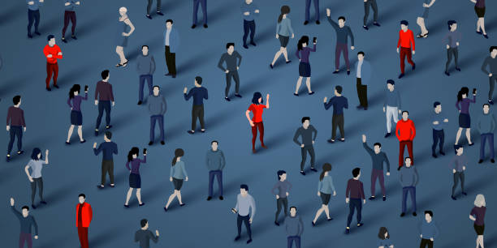

Blender
UE4
Unity
Blender
UE4
Unity
Présentation de mon projet 3D – [Nom de la scène]
Dans le cadre de mon apprentissage en 3D, j’ai réalisé une scène intitulée "[Nom de la scène]". Ce projet avait pour objectif principal de développer mes compétences en modélisation, texturing, lighting, et rendu, tout en explorant un univers visuel cohérent.
Objectifs
- • Concevoir une scène visuellement immersive et cohérente en termes de composition
- • Mettre en pratique la modélisation low-poly ou high-poly (selon ton choix)
- • Mettre en pratique la modélisation low-poly ou high-poly (selon ton choix)
Détails techniques
- • Nombre d’objets modélisés : [XX]
- • Nombre de textures : [XX]
- • Nombre de textures : [XX]
- • Nombre de textures : [XX]
Ce que j’ai appris
Dans le cadre de mon apprentissage en 3D, j’ai réalisé une scène intitulée "[Nom de la scène]". Ce projet avait pour objectif principal de développer mes compétences en modélisation, texturing, lighting, et rendu, tout en explorant un univers visuel cohérent.